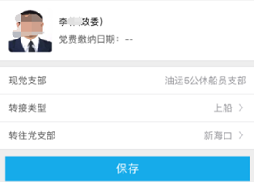
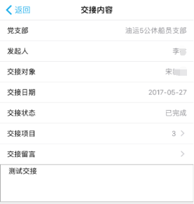

APP操作手册
一、 登录界面
在登录界面录入用户名、密码，进入APP主页。首次登录时，系统后台会自动进行权限初始化及语音注册等操作，首次登录时间会较长。首次登录成功后，下次登录APP会自动登录。
二、 主页
APP主页会显示常用的模块。

点击 “更多”按钮，可以查看到登录用户具有权限的所有模块。
三、 党务学习
在主页点击“党务学习”，进入列表界面。
在列表界面中，点击要查看的记录，进入详细界面。
如果该新闻有附件，在新闻底部，会显示附件的下载链接，点击后下载附件。下载后的附件可在“我的”中的“我的文件”中显示。
四、 组织生活
1、 列表界面
该模块的新增、修改、发布、总结功能，只有支部书记有权限。其他用户只能参加会议及签到。
2、 查询活动
在组织生活列表界面，点击右上方的“+”按钮，选择“查询活动”，进入搜索界面。
在搜索界面，录入查询条件，点击“确定”按钮，根据查询条件搜索出相应结果。
3、 新增
支部书记进入组织生活列表界面，点击右上角的“+”，点击“新增活动”，进入新增界面。
在新增组织生活界面，录入相关信息，点击“保存”按钮，完成新增。
点击“活动附件”，进入APP的附件界面，选择要上传的附件。
4、 修改
在组织生活列表界面，点击右上方的“•••”，选择“修改活动信息”，进入修改界面。

完成修改后，点击“保存”按钮，完成修改。
5、 删除
在列表界面，点击要取消的活动的“•••”按钮，选择“删除发布”。已发布的组织生活不能删除，需要取消发布后才可删除。
6、 发布
在组织生活列表界面，点击右上方的“•••”，选择“修改活动信息”，进入修改界面。
发布成功后，弹出发布成功提示信息。
该活动的状态更新为“已完成”，该支部的所有在岸成员会收到消息提示。
7、 取消发布
在列表界面，点击要取消的活动的“•••”按钮，选择“取消发布”。
8、 是否参加组织生活
支部成员收到组织生活会议的消息提示后，需要回复是否参加组织生活。不参加的，需要填写不参加原因。
9、 参加组织生活
在组织生活列表界面，选择要参加的组织生活，进入会议聊天界面，用户可以进行文字和语音聊天。点击“”，进行会议签到。在会议开始到结束期间，可以进行签到；会议结束后，将无法签到。
点击右上角的“•••”按钮，可以查看聊天记录和附件。
10、 结束组织生活
会议结束后，支部书记在列表界面，选择“完成活动”技术此次会议。
11、 组织生活总结
完成活动后，支部书记需要对该次组织生活进行总结，录入活动总计、为与会人员打分。
点击“与会人员”，为与会人员进行打分，分值为0~10分。
点击“活动详情”，可以查看聊天记录。点击“附件”，可以查看该活动附件。
五、 支部成员信息
支部书记进入支部成员信息模块，可以查看本支部成员的基本信息。点击手机号，可以直接拨打电话。
点击某条记录，进入详细界面。
六、 组织关系转接
1、 列表界面
在主页点击“组织关系转接”按钮，进入组织关系转接列表界面。列表界面中显示该用户的组织关系历史记录、及审核状态。
2、 详细信息界面
点击某条记录，查看该记录的详细信息。审核通过后，可在附件中查看下载介绍信。
3、 新增
点击“+”按钮，进入新增界面，录入相关信息后，点击“保存”按钮完成新增。

点击“转接类型”，选择上船或下船。
点击“转往党支部”，进入党支部查询界面，输入党支部名称，点击搜索后，列出查询结果，选中要转往的党支部，返回新增界面。
七、 支部书记交接
1、 列表界面
在主页点击“支部书记交接”按钮，进入支部书记交接列表界面。列表界面中显示该用户的交接历史记录、及交接状态。
2、 详细信息界面
点击列表中的某条记录，进入详细信息界面。

3、 新增
在列表界面点击“+”，进入新增界面。录入相关信息，点击“保存”完成新增。
点击“交接对象”，进入交接对象搜索界面，搜索到交接对象后，选中即可。
点击“交接项目”，进入交接项目列表，选择要交接的项目，点击“确认”。

4、 确认交接
交接对象登录后，选中相应记录，点击“确认交接”按钮，完成交接，该交接记录状态更新为“已完成”。
八、 党费缴纳
在主页点击“党费缴纳”按钮，进入党费缴纳列表界面。在列表中，显示出未缴纳的月份及金额。
选择要缴纳的记录，点击支付按钮，跳转到用户支付宝的支付界面，进行党费的支付。